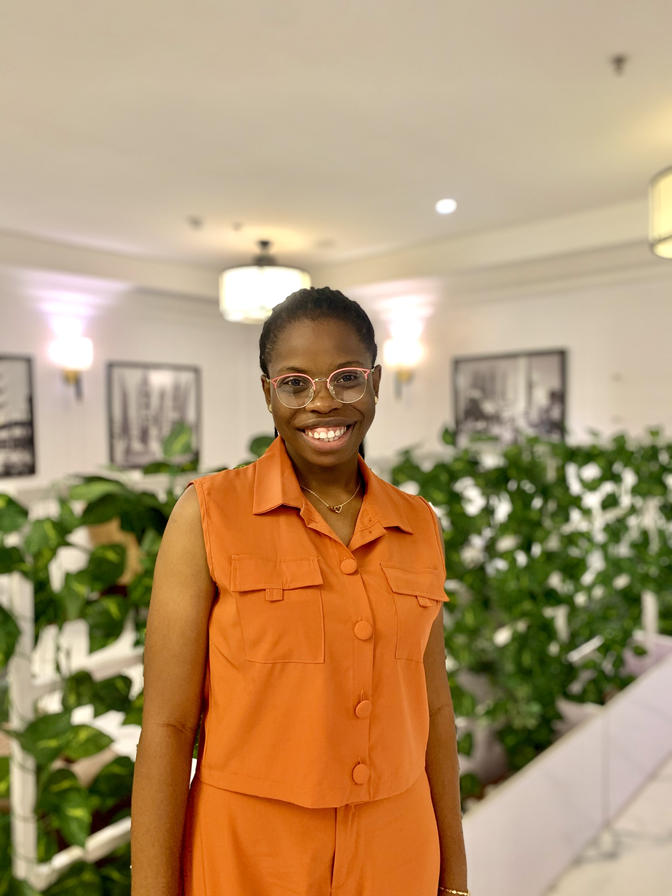

Hi, I’m Opeyemi Adeosun, a passionate Cinematographer, Video Editor, and Graphics Designer with over five years of experience in video production. I specialize in creating visually compelling stories that connect with audiences, and I’ve had the privilege of working with brands like Koolboks and Tida, as well as notable figures like TY Bello and DDK.

I worked at TY Bello studio to edit photos after a shoot and ensure the photos are worked on and given to the client. I also work on BTS from videos shot at the studio and video from worship sessions.
I worked at NeoHub on Contract. I worked closely with the team as an external Designer and editor, the goal was to work on the brand identity of a Zamibian company and provide brand materias for publicity, an upcoming conference and also for social media use. Collaborate with external partners, such as photographers, illustrators, and printers.
I worked at KoolBoks to create visually appealing graphics, illustrations, and layouts for various marketing materials, including brochures, banners, websites, and social media posts. Develop creative concepts and design solutions that align with the brand's visual identity and messaging. Collaborate with external partners, such as photographers, illustrators, and printers.
I worked with them on all the game video content and the production for Unreal Engine.
I became the head of the Media team and took control of all Media outputs for Social Media, websites and the learning platform. I was also behind the Media of Live Awake Conference Media 2021 that hosted more than 5,000 attendees.
I worked closely with DDK for all her expressions. Managed a 5000 attendees conference in 2020 and 2021, used apps like Zoom, Hopin, Heysummit. I created Motion Graphics openers, Montage, and edited all kinds of videos. I worked on her Youtube Channel to create content.
I worked closely with the team to edit videos, I also worked on a project, Live Awake Conference with Madestics studio. In the process I learnt Graphics Design and worked with assets.
Most Improved Team Member -IMMERSE Coaching Company
Most Innovative Team Member -IMMERSE Coaching Company